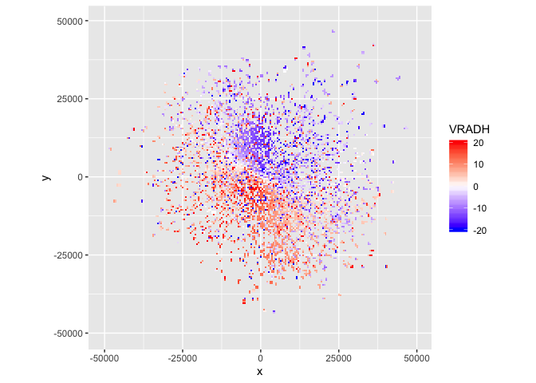
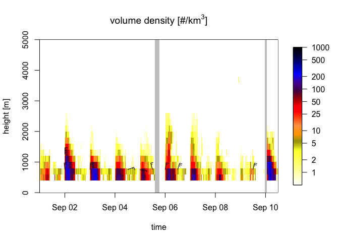
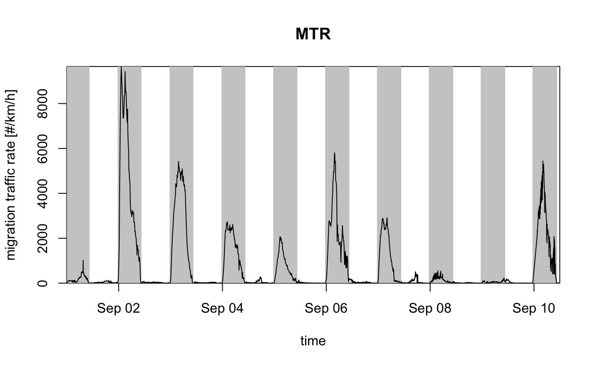

bioRad provides standardized methods for extracting and reporting biological signals from weather radars. It includes functionality to inspect low-level radar data, process these data into meaningful biological information on animal speeds and directions at different altitudes in the atmosphere, visualize these biological extractions, and calculate further summary statistics.
To get started, see:
- Dokter et al. (2018): a paper describing the package.
- bioRad vignette: an introduction to bioRad’s main functionalities.
- Function reference: an overview of all bioRad functions.
- Introductory exercises: a tutorial with code examples and exercises
Documentation for the latest development version can be found here.
Installation
You can install the released version of bioRad from CRAN with:
Alternatively, you can install the latest development version from GitHub with:
Then load the package with:
library(bioRad)
#> Welcome to bioRad version 0.4.0
#> Docker daemon running, Docker functionality enabled.Attention!
Google has recently changed its API requirements, and ggmap - the package used by bioRad to overlay radar scans on maps - now requires users to provide an API key and enable billing in order to use Google imagery. bioRad switched to using stamen maps by default, which do not require special credentials.
ggmap itself is outdated on CRAN; its developers hope to have the new version up on CRAN soon, but until then, see ggmap Github page for how to install the latest development version.
Docker (optional)
You only need to install Docker to:
- Process radar data into vertical profiles of biological targets with
calculate_vp(). - Read NEXRAD radar data with
read_pvolfile(). Docker is not required for reading ODIM radar data. - Convert NEXRAD radar data to ODIM format with
nexrad_to_odim().
Installing Docker
- Go to Docker Desktop.
- Download Docker for Windows or Mac (free login required) and follow the installation instructions. Note that Docker for Windows requires Microsoft Windows 10 Professional or Enterprise 64-bit: installing Docker Toolbox for previous Windows versions will not work.
- Open the Docker application. The Docker (whale) icon will appear in your menu or task bar and indicate if it is running correctly.
- Make local drive(s) available for Docker containers:
- On Windows: right click the Docker icon >
Settings>Shared drives> Select the drive(s) where you will be processing radar files > ClickApply. - On Mac: click the Docker icon >
Preferences>File sharing> Add the drive(s) where you will be processing radar files > ClickApply & Restart.
- On Windows: right click the Docker icon >
- In R do
check_docker(). - You can now use the bioRad functionality that requires Docker.
Known issues with Docker
- Hyper-V / Virtualbox conflicts on Windows. Docker requires Hyper-V enabled, but Hyper-V can not run together with Virtualbox. To use Virtualbox you will need to disable Hyper-V, which also disables Docker, and requires a reboot of the system.
- For firewall issues on Windows, see this issue
Usage
Radar data example
bioRad can read weather radar data (= polar volumes) in the ODIM format and formats supported by the RSL library, such as NEXRAD data. NEXRAD data (US) are available as open data and on AWS.
Here we read an example polar volume data file with read_pvolfile(), extract the scan/sweep at elevation angle 3 with get_scan(), project the data to a plan position indicator with project_as_ppi() and plot the radial velocity of detected targets with plot():
library(tidyverse) # To pipe %>% the steps below
system.file("extdata", "volume.h5", package = "bioRad") %>%
read_pvolfile() %>%
get_scan(3) %>%
project_as_ppi() %>%
plot(param = "VRADH") # VRADH = radial velocity in m/s
Radial velocities towards the radar are negative, while radial velocities away from the radar are positive, so in this plot there is movement from the top right to the bottom left.
Vertical profile data example
Weather radar data can be processed into vertical profiles of biological targets using calculate_vp(). This type of data is available as open data for over 100 European weather radars.
Once vertical profile data are loaded into bioRad, these can be bound into time series using bind_into_vpts(). Here we read an example time series, project it on a regular time grid with regularize_vpts() and plot it with plot():

The gray bars in the plot indicate gaps in the data.
The altitudes in the profile can be integrated with integrate_profile() resulting in a dataframe with rows for datetimes and columns for quantities. Here we plot the quantity migration traffic rate (column mtr) with plot():
my_vpi <- integrate_profile(example_vpts)
plot(my_vpi, quantity = "mtr") # mtr = migration traffic rate
To know the total number of birds passing over the radar during the full time series, we use the last value of the cumulative migration traffic (column mt):
For more exercises, see this tutorial.
Meta
- We welcome contributions including bug reports.
- License: MIT
- Get citation information for
bioRadin R doingcitation("bioRad"). - Please note that this project is released with a Contributor Code of Conduct. By participating in this project you agree to abide by its terms.